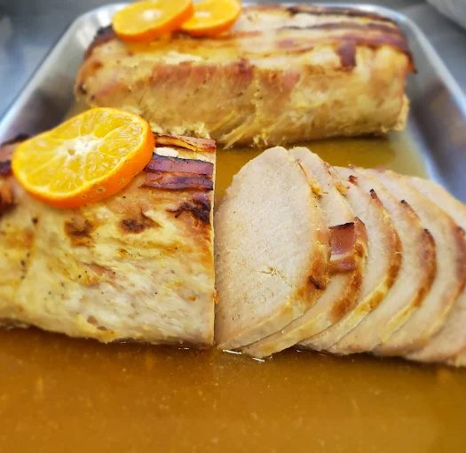
Rotisseria por quilo
Carnes e pratos brasileiros e italianos vendidos por peso. Medalhão, rabada, dobradinha e a quirera lapiana no mesmo balcão.
Somente para levar
Av. Nossa Senhora Aparecida, 1147. Entrega 10h às 13h30.
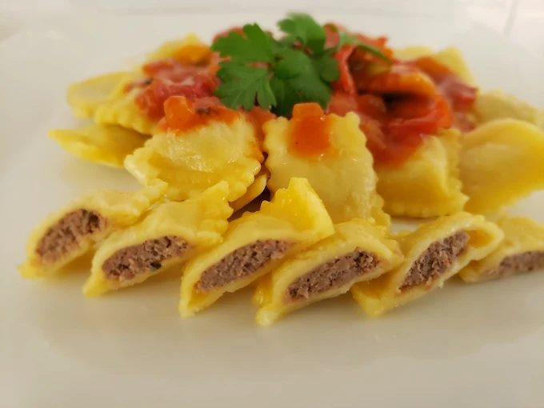
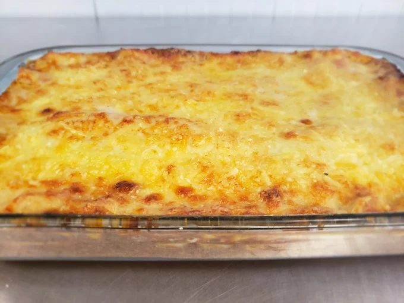
Pedido só por telefone. Você liga, retira no Seminário ou recebe no almoço. O quilo e as massas saem no telefone.
Se o primeiro não atender: (41) 3039-6140
Av. Nossa Senhora Aparecida, 1147, Seminário. Não servimos no local.
Entrega das 10h às 13h30, por ordem de ligação. Bairro e taxa a gente fala no telefone.
Pedido, comida quente e entrega. Folga segunda.
A partir das 8h
A partir das 10h
Das 10h às 13h30
Ter a sex 10h–18h. Sáb, dom e feriados 10h–14h. Folga segunda.
Língua na quarta, rabada na quinta, dobradinha na sexta. Mix brasileiro no balcão da rotisseria.
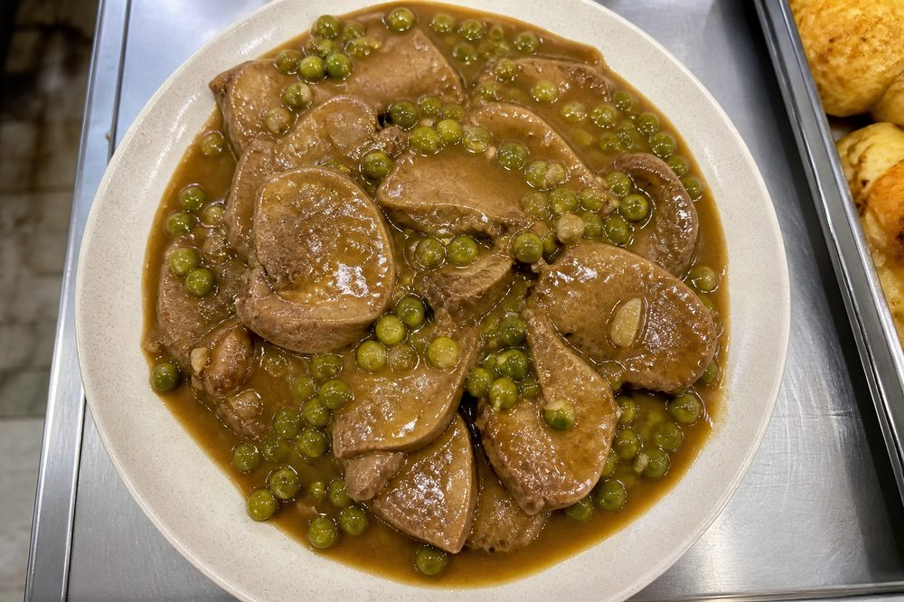
Quarta
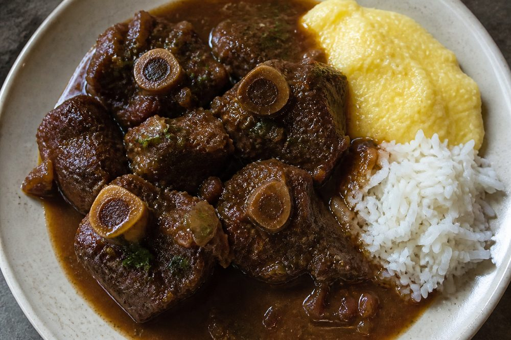
Quinta
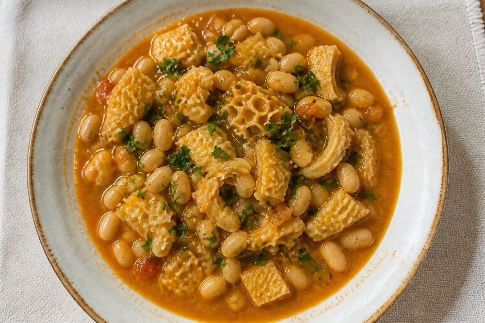
Sexta

Carnes e pratos brasileiros e italianos vendidos por peso. Medalhão, rabada, dobradinha e a quirera lapiana no mesmo balcão.
Lasanha, canelone, rondelli, raviole, capeletti, espaguete, talharim, nhoque e bugatone, com 14 molhos.
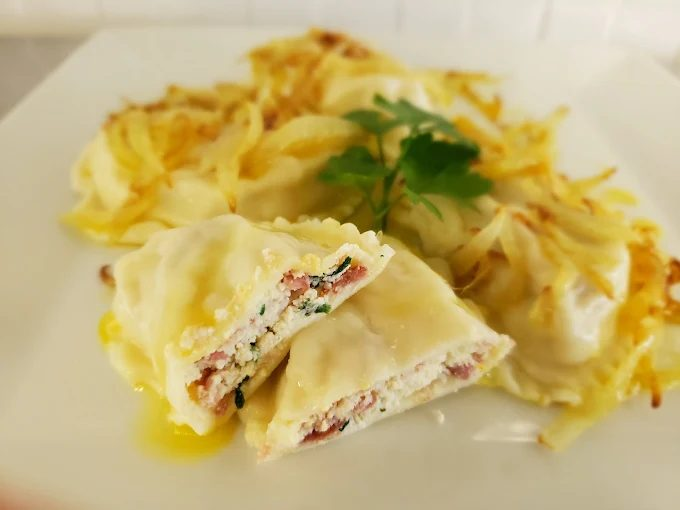
Linha para levar e guardar. Refeição quente hoje, lasanha no freezer para a semana.
O que sai no quilo. O preço a gente fala no telefone. Consulte o que saiu hoje ligando.
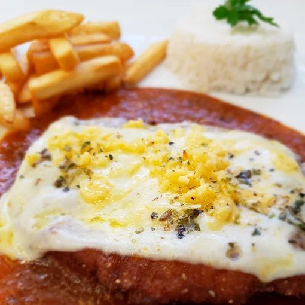
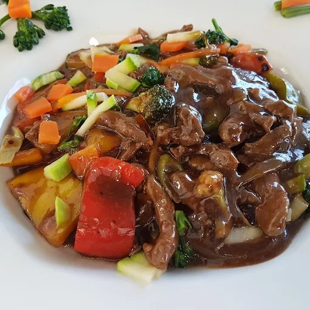
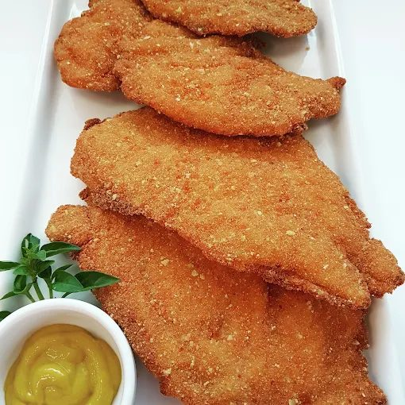
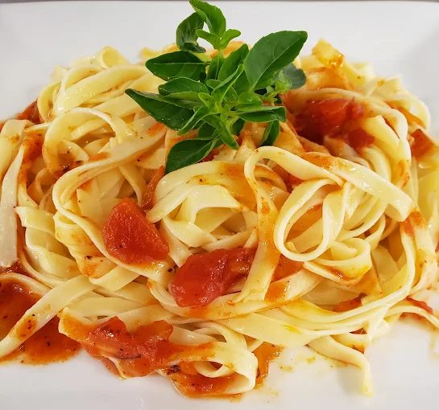
Quem volta, fala do almoço para levar e das massas congeladas.
Mais de 30 anos cliente. Adoro.
Meu lugar favorito em Curitiba para massas congeladas e comida pra levar.
Já é tradição familiar pedir no fim de semana e em dias de semana também.
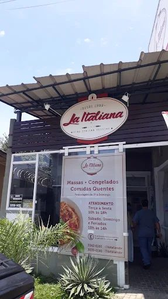
Berezoski Comércio de Massas Ltda começou em 12 de abril de 1990 e segue no nº 1147. Empresa familiar, de geração em geração: refeições prontas, massas e congelados para levar.
Não é restaurante. Não há salão. A oferta é o balcão: você monta a refeição, medalhão, rabada, dobradinha, quirera, e come em casa.
Não. A casa não serve no local. É rotisseria, massas e congelados para levar.
Pedido a partir das 8h. Comida quente a partir das 10h. Entrega das 10h às 13h30. Loja terça a sexta 10h às 18h, sábado, domingo e feriados 10h às 14h, folga segunda.
Ligue para (41) 3342-6160. Se o primeiro não atender: (41) 3039-6140. Você retira no Seminário ou recebe no almoço.
Não pedimos por WhatsApp. É só ligar.
Sim, no almoço, das 10h às 13h30, por ordem de ligação. Bairro e taxa a gente fala no telefone.
Aqui o pedido é ligando, não pelo aplicativo.
Rotisseria: pratos prontos vendidos por peso, do medalhão à rabada e à dobradinha. Massas: lasanha, raviole, nhoque e outras, com molhos. Congelados: para guardar e esquentar em casa. Tudo no mesmo ponto no Seminário.
Peça a orientação na hora do pedido.
No cardápio há saladas, berinjela caponata, empadão de palmito, peixes e molhos como sugo, 4 queijos, funghi e alho e óleo. Pratos do dia: língua na quarta, rabada na quinta e dobradinha na sexta.
Não. A loja é no Seminário, Av. Nossa Senhora Aparecida, 1147, CEP 80310-100. Eixo Batel, Portão e Água Verde.
Estacionamento nos fundos da loja.
Eixo Batel, Portão e Água Verde. Não é Santa Felicidade.
Abrir mapa (abre em nova aba)